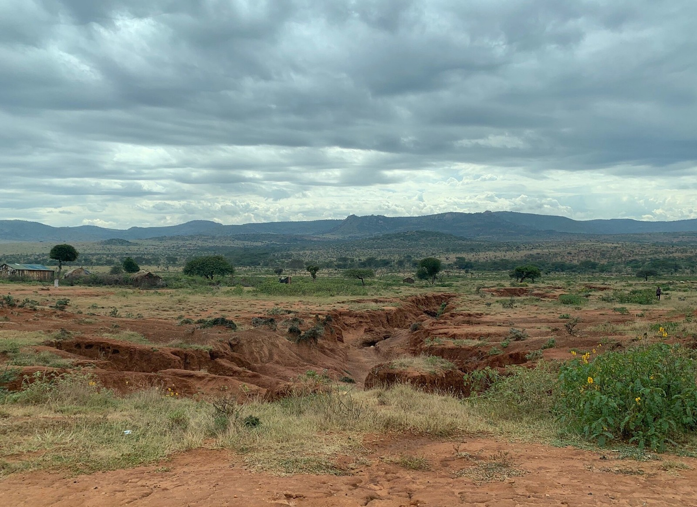
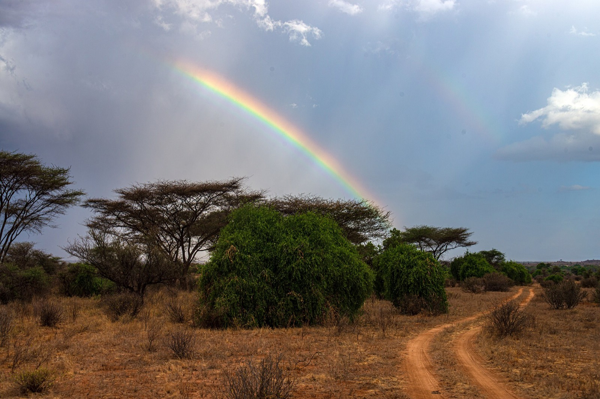
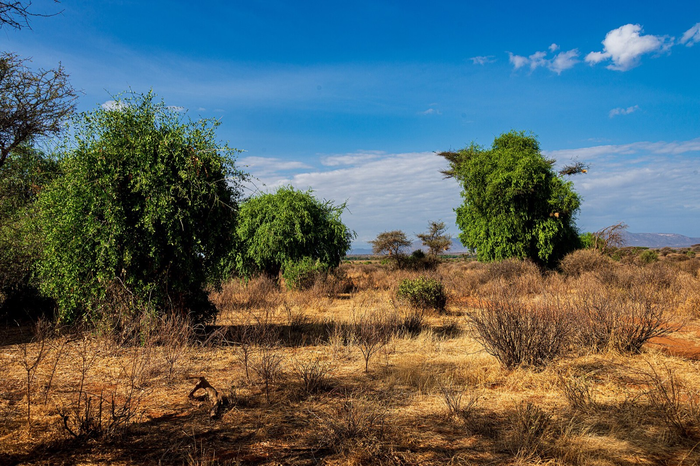
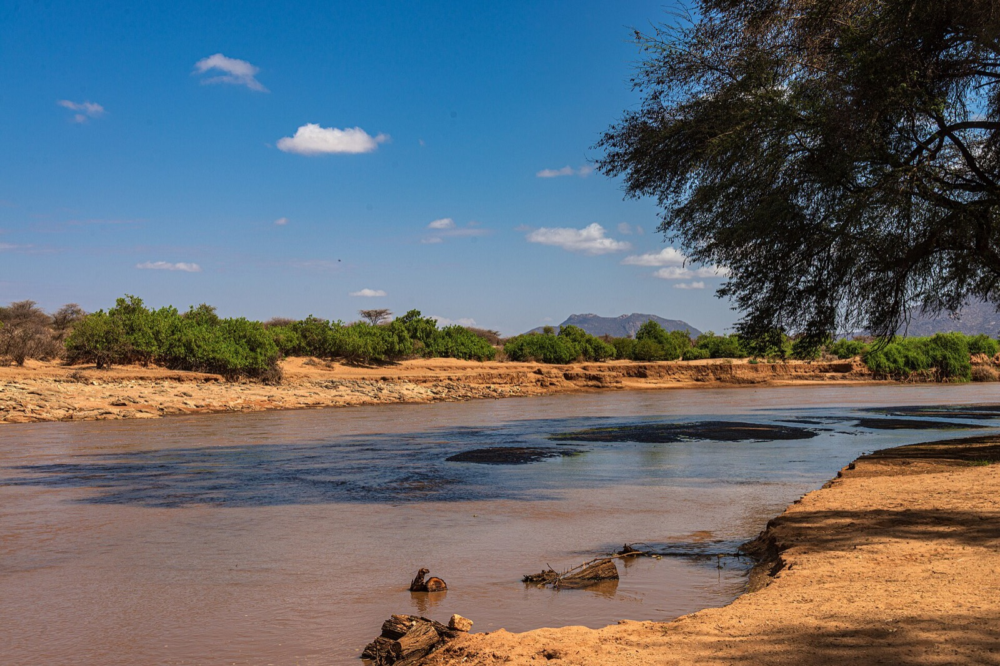

The Foundation is registered
Queen of Peace Hope Foundation can now work across Isiolo County and beyond.

Educate · Protect · Empower
We help vulnerable children across Isiolo County get to school, stay safe and grow into confident, independent young people.
Why this hero: Cliffe's own lines lead ("Every child deserves… a future", "Educate. Protect. Empower."). A rainbow over acacia land says "hope" without showing any child, so no consent is needed. One action only: Sponsor a child.
Who we are
Working across Isiolo County's diverse communities, we remove the barriers that keep children out of school: fees, poverty, distance, and risks to their safety.
School fees, uniforms, books and learning materials, paid straight to schools.
With child protection authorities and approved care providers, we help children at risk stay safe and in school.
Mentors, career guidance, digital literacy and life skills, with graduates coming back to guide the next group.
Source: Cliffe's "Who We Are" and "What We Do". "Graduates coming back to mentor" is from Josephine's 31 Oct call. Three words, three columns: the tagline becomes the page's structure.
Who we support
Source: Cliffe's seven priority groups, word for word in meaning. Each child is assessed individually, never by community (his background doc). No community is named next to a harm (our rule).
 Artelnjeru, CC BY-SA 4.0 (placeholder)
Artelnjeru, CC BY-SA 4.0 (placeholder)Our work
Fees, uniforms, books and essentials for vulnerable and promising students.
Keeping girls in school, preventing early marriage and FGM, building leaders.
With authorities and approved care providers, for children facing abuse or unsafe homes.
Parents, elders, women and faith leaders creating safer homes for children.
Career guidance, leadership, digital literacy and life skills.
Source: Cliffe's five programmes. "Safe Homes" is renamed "safe care" so it never reads as the Foundation running a children's home, which Kenyan law restricts (Children Act 2022); his own text already says "approved care providers".
Our impact sample numbers
Updated every week from our records. We publish totals, never children's names.
Why: transparency is what funders check first, and it's the core of Joseph's tracking system. These numbers come live from the Foundation's own tracker (totals only). 5 students and KES 1.22M are from the sponsorship profiles; 38% is a placeholder.
How your gift works
M-Pesa, PayPal or bank transfer.
Every gift goes to the Foundation's own account.
Fees go directly to the school, receipt kept.
Attendance and progress tracked each term.
A thank-you, then a short update every month.
Why: answers a sponsor's real question, "where does my money go?", in five steps. It's the donor-facing side of the tracker, donation log and monthly update we planned.
Where we work
A culturally diverse county of pastoralist, agro-pastoralist and farming communities, including the Borana, Samburu, Turkana and Meru, alongside Somali and other families. Drought, distance and insecurity make school hard to reach for many children.
Source: Cliffe's background document. The community-by-community challenges stay in our grant materials, not on the public site, so no community is shown as the problem.
Placeholder film: "Northern Kenya: from the forest to the desert", Xavier de Diego, CC BY-SA 3.0. To be replaced with the Foundation's own footage.
Latest news

Queen of Peace Hope Foundation can now work across Isiolo County and beyond.

Our students start the new term with fees paid and books in hand.

Meetings with parents and elders on keeping girls in school.
Why: a live "what we're doing" feed was Joseph's idea; Cliffe writes an update in a simple form and it appears here only after Josephine approves it. Keeps the site alive without a developer.
Sponsor a child, transform a future
Individuals, families, businesses and institutions can all help a child reach school and stay there.
Source: Cliffe's closing lines, nearly word for word.
About us
Queen of Peace Hope Foundation is a community-focused organisation based in Isiolo County, Northern Kenya.
To provide vulnerable children with access to quality education, protection, mentorship and opportunities that enable them to become confident, independent and responsible members of society.
A society where every child enjoys education, protection, dignity and equal opportunities to build a better future.

Daniel Case, CC BY-SA 4.0 (placeholder)"Education is one of the most effective ways of breaking the cycle of poverty."
Source: mission, vision and approach from Cliffe's content; the headline line is from his background document ("protecting a child and educating a child must be treated as one responsibility").
Where we work
Home to Borana, Samburu, Turkana and Meru communities, alongside Somali and other families. Children here may face long distances to school, drought and livestock losses that strain family budgets, and pressures that pull girls out of class. Positive change is already led by elders, women, teachers and local groups.
Why: describes needs and strengths together, as Cliffe's document asks ("not to portray any community as uniformly harmful").

Map: NordNordWest, CC BY-SA 3.0 DE.
Our people
Founded by Josephine Ekiru, a peacebuilder from Isiolo and founder of the Queen of Peace Initiative, recipient of the 2021 Women Building Peace Award.
Our safeguarding promise
Why: funders and donors look for a safeguarding statement before giving; Cliffe raised consent and data protection on the call. Team photos and roles only with each person's OK.
Our work
Five programmes that work together, starting with education sponsorship.
We find students who are out of school or about to drop out, link them to a place in a local school, and pay what stands in the way: fees, uniforms, books and essentials. Boarding school where a child needs to be safe.
Keeping girls in class through the long December holiday and beyond, preventing early marriage and FGM, and building leaders through mentorship.
With child protection authorities and approved care providers, we support children facing abuse, neglect or unsafe homes, through family-based and community care first.
Parents, elders, women and faith leaders creating safer homes; career guidance, digital literacy and life skills for students.
Source: the order follows Cliffe on the 13 Nov call: education first, then livelihoods, then climate. "Long December holiday" and "boarding for safety" are his words from the call. "What we track" is Joseph's tracking plan, shown publicly so funders see the rigour.
Impact and transparency
Totals from our records. Children's details stay private.
| Level | Students | Fees needed | Paid | Status |
|---|---|---|---|---|
| College / diploma | 2 | KES 230,000 | KES 40,000 | Raising |
| Secondary | 1 | KES 50,000 | KES 50,000 | Paid ✓ |
| Primary and early years | 2 | KES 45,000 | KES 10,000 | Raising |
Our records follow the fields funders recognise, so reports are ready when you need them.
Why: the public face of the private tracker ("CRM view" for the team, "website view" for everyone). Grouped by level, never by child. Numbers here are illustrations; the real ones update automatically from the Foundation's sheet.
Sponsor a child
Your gift joins our Education Fund, which pays fees straight to schools. We share how every shilling is used.
Books and supplies for a student for a term.
A steady share of a secondary student's fees all year.
A full term of secondary school fees.
To keep children safe, we don't publish individual profiles. Your gift supports students through our Education Fund, and you'll see the results in our reports.
Why: monthly giving is the steadiest money a small charity can have, so it's featured. Gift amounts are examples to confirm with the team. "Why we pool gifts" protects children at risk while keeping Cliffe's "Sponsor a Child" idea. Donate buttons connect to the Foundation's PayPal and M-Pesa once open; money never touches the website.
Get involved
Partner with us to re-admit and support students.
Programme concept notes and reports on request.
Mentoring, skills and time.
Source: "We invite partners, donors, volunteers and well-wishers" (Cliffe). Messages would go to the Foundation's official email, which is being set up.